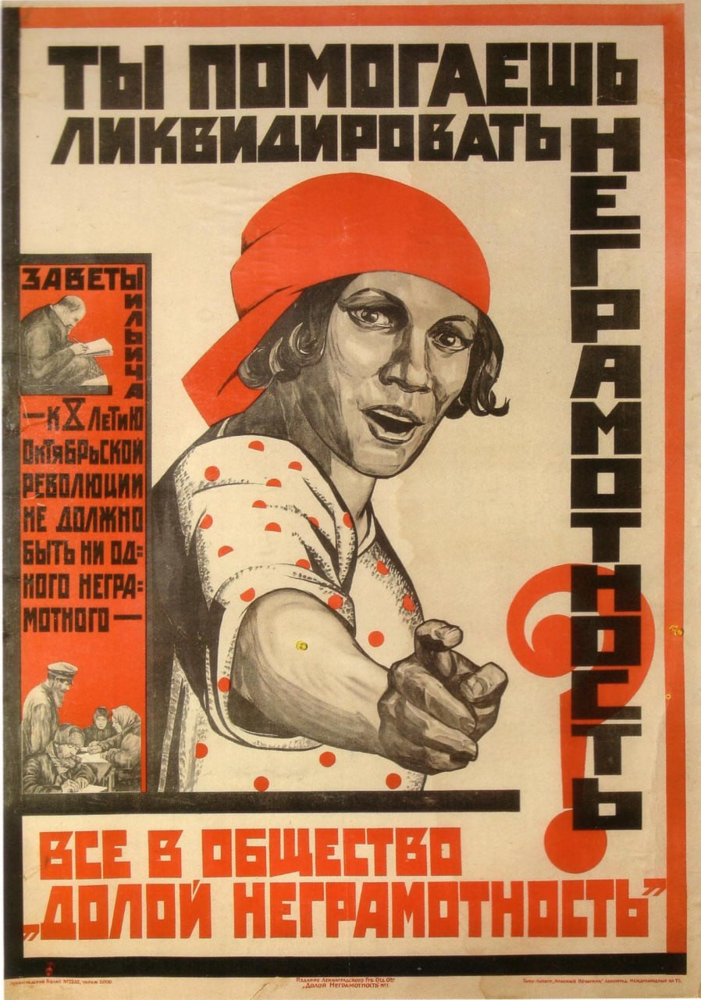
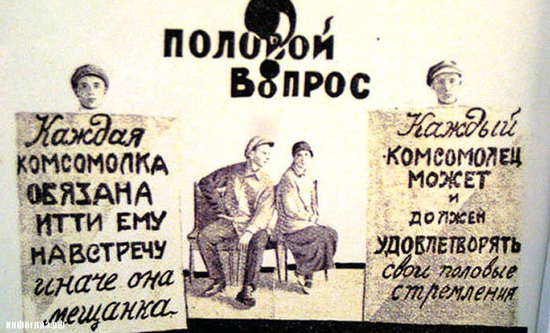
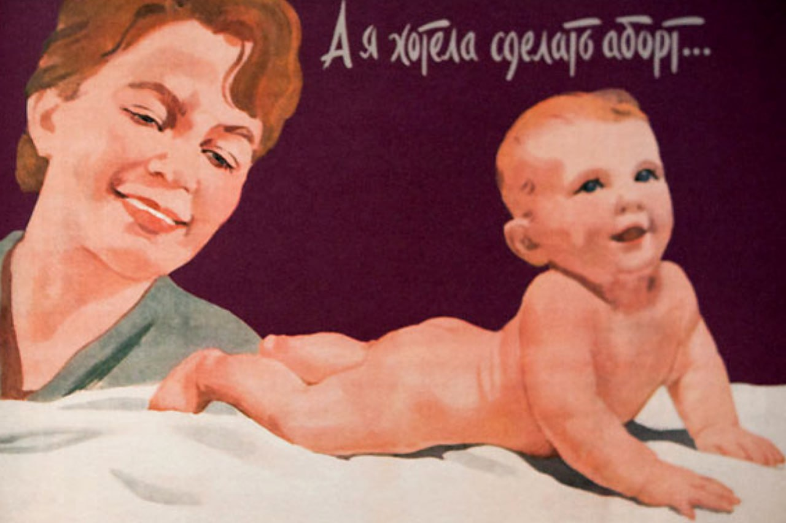
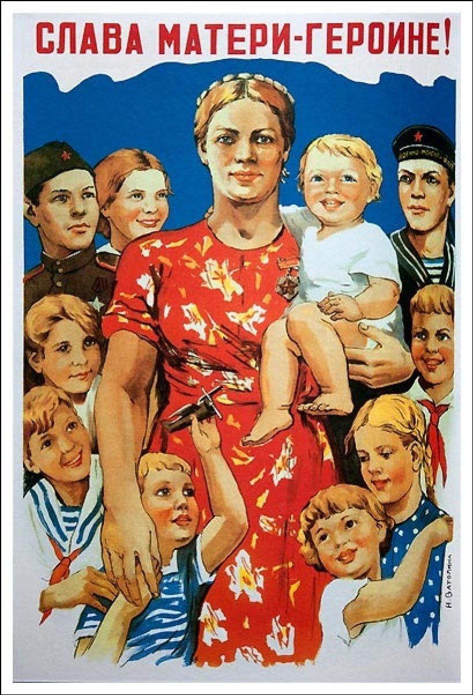
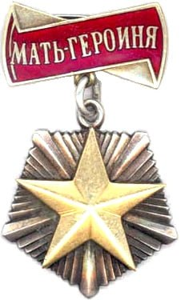
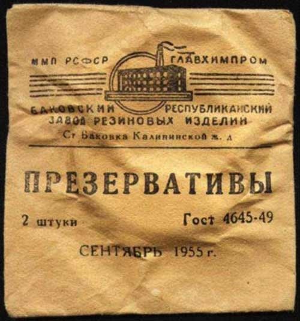
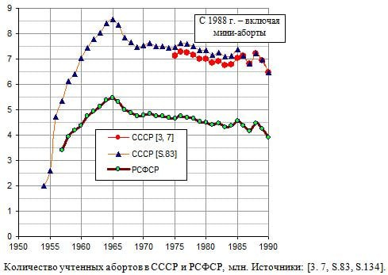
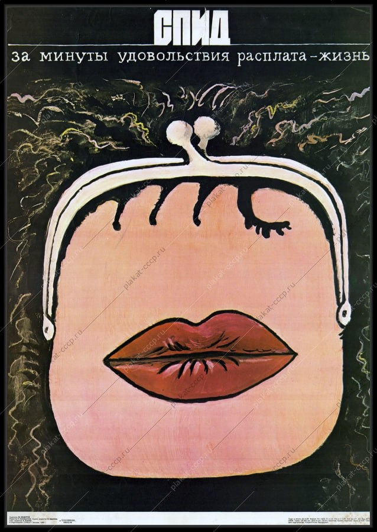

Музейная онлайн-экспозиция
Контрацепция, политика тела и частная жизнь в СССР
От революционной либерализации до перестройки — как государство формировало репродуктивную политику, какие практики контрацепции были доступны и как менялась культура интимности в 1917–1991 гг.

Плакат санитарного просвещения, 1920-е.

«Половой вопрос» как тема новой публичности.
1917–1929
Революционная либерализация и эксперимент
- Политика и законы: После 1917 г. отменены дореволюционные нормы о «нравственности». В 1920 г. РСФСР становится первым государством мира, легализовавшим аборт по медицинским и социальным показаниям (Наркомздрав, декрет от 18.11.1920). Декриминализована гомосексуальность (в РСФСР).
- Контрацепция: Массово отсутствует. Государство не развивает контрацептивную инфраструктуру, делая ставку на аборт как основной регулятор рождаемости. В быту используют прерванный акт, календарный метод, спринцевания.
- Половая жизнь и нормы: В первой половине 1920-х господствуют идеи А. Коллонтай о «свободе чувств», сексуальном просвещении и отходе от буржуазной семьи. К концу десятилетия начинается откат: партия видит в неконтролируемой сексуальности угрозу трудовой дисциплине, росту вензаболеваний и «мелкобуржуазному разложению».
- Ключевые источники: Декреты Наркомздрава 1920–1922 гг.; работы А. Коллонтай «Дорогу крылатому Эросу» (1923); архивы РГАЭ (ф. 393, оп. 2).

Плакат о контроле здоровья в 1930–1940-е.
1930–1954
Сталинский консерватизм и демографический контроль
-
Политика и законы:
- 1933–1934 гг. — введение уголовной ответственности за мужеложство (ст. 121 УК РСФСР/СССР), гомосексуальность объявлена «буржуазным пережитком» и преступлением.
- 27.06.1936 г. — постановление ЦИК и СНК «О запрещении абортов…»: полный запрет, кроме строгих медицинских показаний; штрафы и уголовная ответственность врачей.
- 08.07.1944 г. — Указ «Об увеличении государственной помощи беременным…»: усложнение развода, отмена института фактического брака, введение «налога на бездетность», усиление статуса законного брака.
- Контрацепция: Официально не обсуждается, считается «буржуазной» и антисоветской. В практике подпольных абортов, высокий материнский травматизм. Презервативы и диафрагмы производятся в ничтожных объёмах, распределение не системное.
- Половая жизнь и нормы: Сексуальность подчинена репродуктивной функции. Публичная мораль строго пуританская, обсуждение интимной сферы табуировано. Внебрачные связи существуют, но скрываются; государство продвигает образ «советской семьи» как ячейки общества.
- Ключевые источники: Постановления 1936 и 1944 гг.; ст. 121 УК РСФСР; отчёты Наркомздрава о материнской смертности; работы Д. Филд «Mothers and Daughters» (архивные выписки).

Медицинский дискурс возвращается в 1950-е.
1955–1970
Оттепель, возврат к медицинскому регулированию
- Политика и законы: 23.11.1955 г. — Указ Президиума ВС СССР «Об отмене запрещения абортов». Аборт снова легален, проводится в государственных учреждениях бесплатно.
- Контрацепция: Начало внедрения внутриматочных спиралей (ВМС) в конце 1950-х – 1960-х гг. Оральные контрацептивы (ОК) появляются в конце 1960-х, но их доступность низкая, качество нестабильное, врачи часто не рекомендуют из-за отсутствия клинических протоколов и идеологических сомнений.
- Половая жизнь и нормы: Формально секс допустим только в браке, фактически высокий уровень внебрачных связей. В научной среде начинает развиваться демографическая статистика и репродуктивная медицина. Публичная культура остаётся закрытой, но появляются первые медицинские пособия по планированию семьи.
- Ключевые источники: Указ 1955 г.; отчёты Минздрава СССР по абортам (1956–1970); ранние работы И.С. Кона по социологии пола (рукописи 1960-х); журнал «Вопросы демографии» (с 1960-х).

Плакат о здоровье семьи и ответственности.
1971–1985
Научная сексология, ограниченная контрацепция и «застой»
- Политика и законы: Государство продвигает «ответственное родительство», но контрацепция не входит в массовую госпрограмму. Аборты остаются основным методом планирования семьи (до 5–6 млн ежегодно в 1960–80-е гг.).
- Контрацепция: ВМС становятся основным методом в поликлиниках. Советские ОК («Тризистон», «Антиовин») производятся с конца 1970-х, но их распределение неравномерное, побочные эффекты poorly documented. Презервативы низкого качества, часто дефицит.
- Половая жизнь и нормы: Двойственность норм: официальная пуританская риторика vs. реальная практика. Сексология легитимизируется как медицинская дисциплина (кафедры в медвузах, 1970-е). Выходит «Общая сексопатология» под ред. Г.С. Васильченко (1977). Появляется самиздат и переводная литература, но под контролем.
- Ключевые источники: Г.С. Васильченко «Общая сексопатология» (1977); статьи в «Социологических исследованиях» (1970–80-е); архивные данные по абортам (ГАРФ, ф. Р-9401); работы Е. Здравомысловой и Д. Анохина по демографии.

Перестройка открывает тему публичного диалога.
1985–1991
Перестройка, гласность и публичное обсуждение
- Политика и законы: Политика гласности снимает табу на обсуждение сексуальности. В 1987–1989 гг. запускаются пилотные программы полового воспитания в школах, создаются первые центры планирования семьи.
- Контрацепция: Начинается импорт ОК и презервативов, но дефицит сохраняется. В 1989 г. создаётся Всесоюзная ассоциация планирования семьи. Государство впервые финансирует программы контрацептивного просвещения.
- Половая жизнь и нормы: Открытые дискуссии в прессе («Огонёк», «Смена», «Неделя»), рост внимания к ВИЧ/СПИДу, изменение отношения к разводам и внебрачным связям. Сексуальность перестаёт быть исключительно государственно-репродуктивной темой, становится вопросом личного выбора и здоровья.
- Ключевые источники: Публикации в «Огоньке» и «Неделе» (1987–1990); отчёты Минздрава СССР по планированию семьи (1989–1991); И.С. Кон «Вкус запретного плода» (1991, но опирается на исследования 1980-х); архивы РГАЭ (ф. 1562).
Сводная линия времени
Ключевые вехи политики и практик
- 1920 — Декрет о легализации абортов (РСФСР — первая в мире).
- 1936 — Запрет абортов, курс на укрепление семьи.
- 1944 — Указ о налоге на бездетность и усложнении разводов.
- 1955 — Отмена запрета на аборты (возврат к медицинскому регулированию).
- 1960–70-е — Появление первых советских ОК и ВМС, но в условиях дефицита.
- 1987–91 — Гласность, сексуальное просвещение, первые центры планирования семьи.
Линия времени показывает, как политические решения напрямую влияли на повседневные практики и медицинскую инфраструктуру.

Плакат для общественных кампаний здоровья.

Архивный плакат: наследие и память.
Источники
Архивы, исследования и публикации
В каждом блоке указаны ключевые источники. Ниже — сводный перечень по эпохам для удобной навигации.
1917–1929
Декреты Наркомздрава 1920–1922 гг.; работы А. Коллонтай «Дорогу крылатому Эросу» (1923); архивы РГАЭ (ф. 393, оп. 2).
1930–1954
Постановления 1936 и 1944 гг.; ст. 121 УК РСФСР; отчёты Наркомздрава о материнской смертности; работы Д. Филд «Mothers and Daughters» (архивные выписки).
1955–1970
Указ 1955 г.; отчёты Минздрава СССР по абортам (1956–1970); ранние работы И.С. Кона по социологии пола (рукописи 1960-х); журнал «Вопросы демографии» (с 1960-х).
1971–1985
Г.С. Васильченко «Общая сексопатология» (1977); статьи в «Социологических исследованиях» (1970–80-е); архивные данные по абортам (ГАРФ, ф. Р-9401); работы Е. Здравомысловой и Д. Анохина по демографии.
1985–1991
Публикации в «Огоньке» и «Неделе» (1987–1990); отчёты Минздрава СССР по планированию семьи (1989–1991); И.С. Кон «Вкус запретного плода» (1991, но опирается на исследования 1980-х); архивы РГАЭ (ф. 1562).
Сводка помогает быстро перейти к эпохе и пересмотреть ключевые документы и исследования.